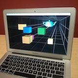

Hi! I am a M.S. student in the Computer Science department at Stanford University. I have experience in embedded systems and artificial intelligence. I am interested in leveraging hardware knowledge to accelerate machine learning algorithms. Applications in computer vision, natural language understanding, and biology are particularly exciting to me.
Here are some projects I have worked on, spanning fields from FPGA development to natural language understanding. Click the titles to read the reports! Author names are in alphabetical order.
We investigate the problem of style transfer: Given a document D in a style S, and a separate style S', can we produce a new document D' in style S' which preserves the meaning of D'? We describe a novel style transfer approach that does not rely on parallel or pseudo-parallel corpora, making use of anchoring-based paraphrase extraction and recurrent neural language models. Language models implemented in Torch7.

Virtual Reality Window Pol Rosello, Cheng-Han Wu, Jiayu Wu CS 231a - Computer Vision: From 3D Reconstruction to Recognition, Stanford, Spring 2016
Implemented a virtual reality system which achieves the illusion of depth on an ordinary display, requiring no special equipment (other than a webcam and a computer). The display simulates motion parallax and a changing field of view, functioning as a "window" into a virtual, three-dimensional scene. We use Haar cascade classifiers, camera models, and Kalman filtering to track the user's head position in 3D in real time and update the display according to an off-axis projection model. We extend our system with a gesture recognition pipeline that allows for object or scene orbiting. Uses OpenCV and OpenGL. Demo video.
Designed and trained a fully-convolutional neural network that predicts future optical flow from a single video frame. Extended the pipeline with iterative frame warping to generate video predictions in raw pixel space. Implemented in Torch7. Demo video.
Developed an FPGA-based automatic table tennis score keeper. By analyzing a video feed of a live game, the system is able to award points in real time with no direct user input. Implemented fully in FPGA hardware logic without the use of soft cores. The project has been featured on Hackaday and the October 2015 issue of IEEE Computer Magazine, and our demo video has been viewed over 13,000 times on YouTube.
Wrote and optimized algorithms in C/C++ to benchmark a novel high-performance, energy-efficient parallel computing microarchitecture by mapping them to a research ISA. Contributions acknowledged in two accepted 2014 IEEE MICRO papers (1, 2) authored by the group.
Programmed and debugged the command and data handling board of a high-agility nanosatellite set to launch in 2017. The board serves as the satellite's central router and interfaces with the flight computer, radio, and numerous sensors such as a gyroscope, a spectrometer and a star tracker.